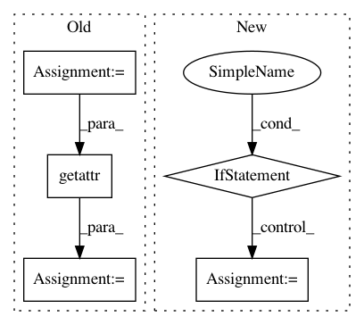

10d7ece1c34c5533262a54d20d974a3d04f0b7ce,src/sdk/pynni/nni/compression/tensorflow/compressor.py,,_instrument_model,#Any#Any#,289
Before Change
cur = getattr(cur, key)
else:
name, index = key
cur = getattr(cur, name)[index]
key = wrapper.layer_info.path[-1]
if isinstance(key, str):
setattr(cur, key, wrapper)
else:
After Change
new_layer = self._instrument(value)
if new_layer is not value:
setattr(model, key, new_layer)
elif isinstance(value, list):
for i, item in enumerate(value):
if isinstance(item, tf.keras.layers.Layer):
value[i] = self._instrument(item)
return model
def _select_config(self, layer):
In pattern: SUPERPATTERN
Frequency: 3
Non-data size: 5
Instances
Project Name: microsoft/nni
Commit Name: 10d7ece1c34c5533262a54d20d974a3d04f0b7ce
Time: 2020-09-15
Author: 40699903+liuzhe-lz@users.noreply.github.com
File Name: src/sdk/pynni/nni/compression/tensorflow/compressor.py
Class Name:
Method Name: _instrument_model
Project Name: deepmipt/DeepPavlov
Commit Name: 286a864220a00732d382a75051e11877acf13c3f
Time: 2018-01-24
Author: ol.gure@gmail.com
File Name: deeppavlov/models/tokenizers/nltk_tokenizer.py
Class Name: NLTKTokenizer
Method Name: __init__
Project Name: keras-team/keras
Commit Name: 79edae58d5892c5a7eb19b68f9e79dfae4682e20
Time: 2016-09-09
Author: kuza55@gmail.com
File Name: keras/backend/tensorflow_backend.py
Class Name: Function
Method Name: __call__